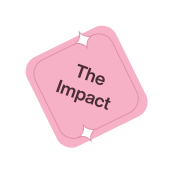

Manipal Academy of Higher Education
Manipal Academy of Higher Education (MAHE) is synonymous with excellence in higher education. MAHE is one of India’s leading academic and research institutions with a NAAC A++ rating and prestigious Institution of Eminence (IoE) recognition. The institution has been offering world-class education across diverse streams since 1953. It is ranked #3 by NIRF and has a track of notable alumni like Satya Nadella, Vikas Khanna, and Dr Devi Prasad Shetty. The university offers various in-demand bachelor’s, master’s, and professional certification programs in the online mode to professionals across the world.
Rankings & Accreditations


Top Online Courses


Leading with results

Years of academic excellence
Student nationalities
Faculty and staff
Students from across the world
Meet your expert faculty


Featured Alumni

Learner Demographics(2026)
Age Distribution
Work Experience Distribution
Gender Distribution


Campus Immersions
Connect with fellow learners through exciting on-campus events.


Explore other Manipal institutions
Ranks 3rd amongst all universities